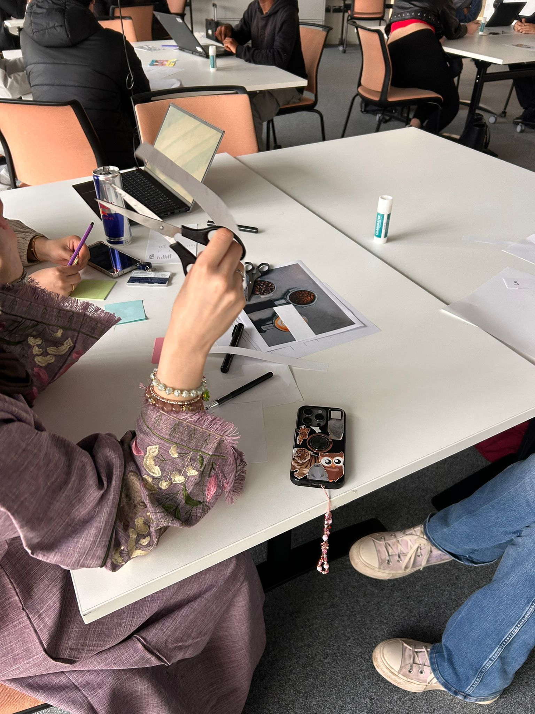
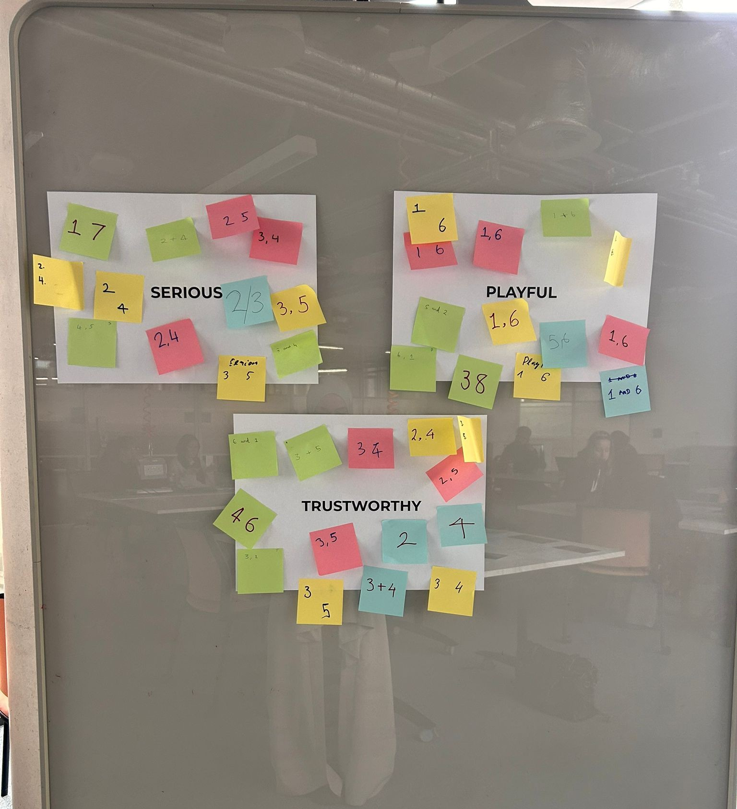
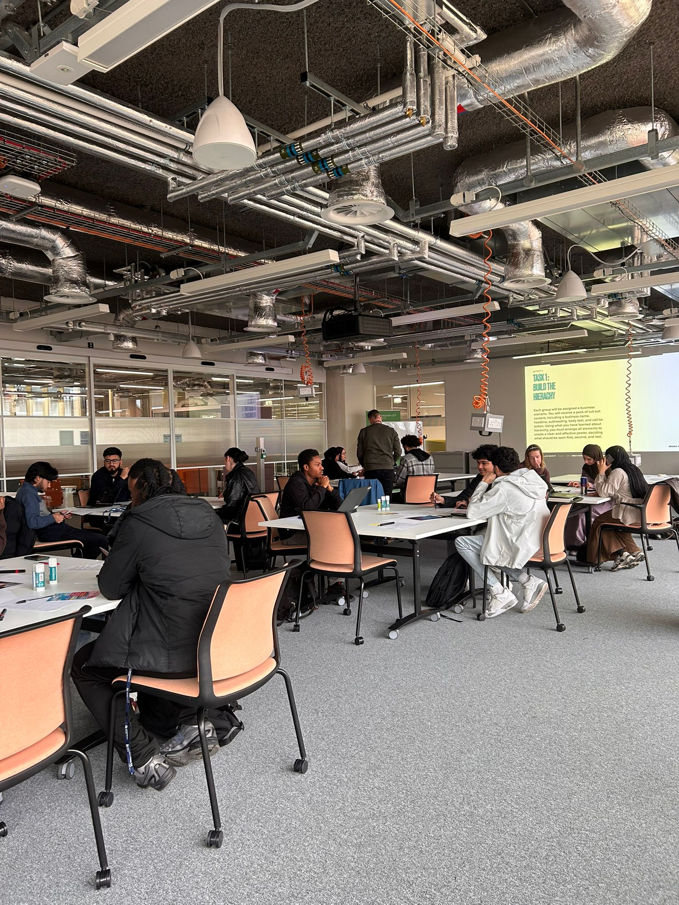

Purpose
The workshop challenged teams to think deeper about user psychology. It encouraged participants to question not just how something looks, but why users respond to it in certain ways.
Week 5 explored how users perceive and interact with design, led by the Creative Exchange.
This session moved beyond theory and into action. Founders were
pushed into a fast-paced design challenge where decisions had to
be made quickly, without overthinking or perfectionism.
The focus shifted from simply building features to understanding
how users interpret, trust, and interact with products in real
scenarios.
The workshop challenged teams to think deeper about user psychology. It encouraged participants to question not just how something looks, but why users respond to it in certain ways.
Through a hands-on design challenge, teams were forced to make quick decisions and justify them. The emphasis was on instinct, clarity, and understanding what actually influences user behaviour.
Teams began thinking beyond aesthetics and focused on how design decisions shape user experience and trust.
Participants explored what makes users trust a product and how design choices influence credibility.
Teams learned to design interfaces that feel natural and easy to use without requiring explanation.
The session highlighted how design directly shapes user decisions, actions, and overall experience.
By the end of the session, teams moved from focusing purely on building features to designing meaningful user experiences that influence behaviour and build trust.
This session showed that good design is not just visual. It shapes how people feel, think, and act when interacting with a product, making it a critical part of building successful solutions.
This session focused on the psychology of design and user perception. Participants were challenged to think quickly, make decisions under pressure, and understand how design influences user behaviour.



Return to the full programme schedule and explore the rest of the sessions.